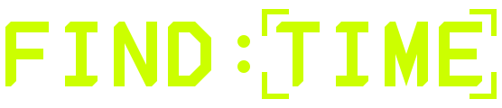
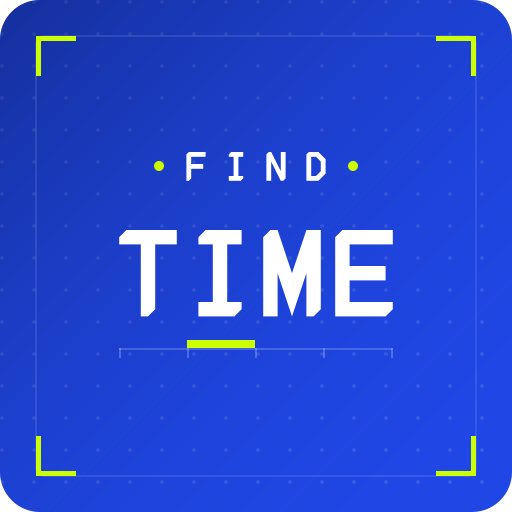
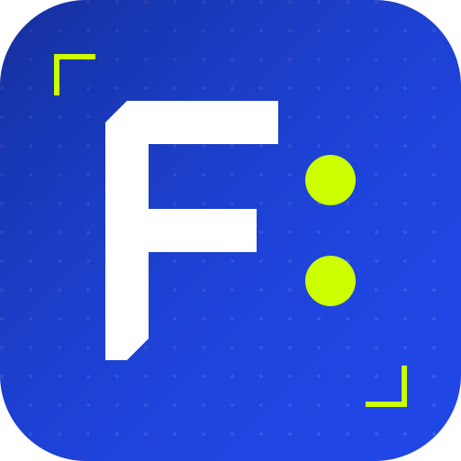
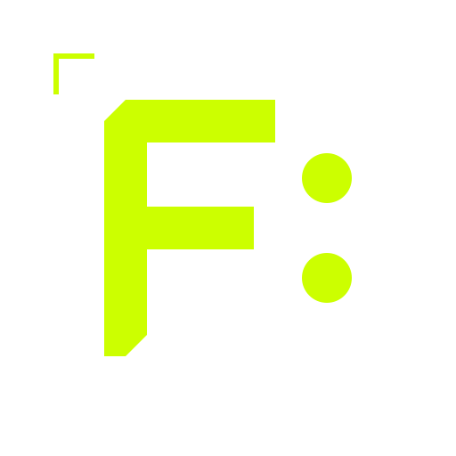

Find Time · Brand board · Torch Genesis Broadcast
A bespoke geometric monospace alphabet drawn as SVG paths on a 6px grid —
cap height 72, advance 60, stem 12 — with a signature 1-unit 45° chamfer
cut into every glyph's extreme top-left and bottom-right corner. It is the
instrument-panel type of the product, redrawn as a wordmark rather than a
font set on <text>.
The lockup is FIND:TIME. The colon is two lime dots — a digital-clock time separator that also echoes the StatusDot / traffic-light motif. Lime L-reticles lock onto TIME: the system has found an open slot and is blocking it. White glyphs on the electric-blue field; one-colour variants for every other surface.

Below ~20px cap the chamfers and the reticle gap start to fill in — use the icon mark instead of the horizontal lockup at those sizes.



The icon distils the wordmark to its first glyph — the chamfered F — plus the lime clock-colon and a diagonal reticle pair. It holds as a shape at 16px.
F · I · N · D · T · M · E — enough for the lockup. Extend the set by keeping the four numbers (60 / 72 / 12 / 6) and the two chamfers.
#CCFF00, never recoloured, except in the one-colour variants where the whole mark collapses to a single ink.Find Time is a scheduling instrument, so the logo is built like one: a fixed monospace grid, hard geometry, a single repeated cut. The chamfer reads as a bevelled panel edge — the broadcast-console language of the product surface. The colon does double duty as a clock separator and a status light, and the reticles are the same L-shaped lime brackets the app uses to frame anything it has locked onto. The wordmark is not decoration applied to the product; it is the product's own drawing system at display size.